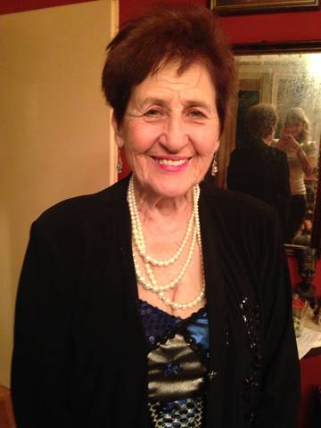

"Želja da svaki turista iz Beograda ode sa osmehom, lepim utiscima i najlepšim i jedinstvenim suvenirima mi je glavna motivacija koja mi pruža novu energiju svaki dan." - Olga
Gospođa Olga, poznata i kao dama sa belim šeširom, rođena je 1931. godine u Beogradu. Ceo radni vek provodi na Kalemegdanu(sada već 61 godinu,
a nadamo se i jos mnogo više),pa je zbog toga zovu i legendom Kalemegdana. Gospođa koja danas ima 85 godina, je najstariji radnik na Kalemegdanskoj Tvrđavi.
Još od davne 1955. godine ona je radila, najpre, u Muzeju Šumarstva i lova (danas poznatiji kao Prirodnjački muzej) sve do 1990. godine, kada se penzionisala.
Tokom rada u muzeju napisala je knjigu "Beli zeka decu čeka", inspirisana sopstvenim, kao i detinjstvima mnogobrojne dece koju je svakodnevno vidjala na
Kalemegdanu. Knjiga je dobila naslov po statui belog zeke koja je stajala na prozoru muzeja i time privlačila mnogobrojnu decu. Nakon penzionisanja nije zelela
da se povuče u kuću, kao većina ljudi danas, već je odlučila da se bavi onime što najviše voli - turistima.
Zbog svoje ljubavi prema turistima ona se već
više od 20 godina trudi da svakog turistu pozdravi sa osmehom i lepim rečima, kao i suvenirima koje prodaje po najnižim cenama u gradu. Paleta proizvoda koje
prodaje možda nije najveća, ali veliki broj proizvoda sama pravi uz pomoć svoje ćerke i unuke, kao što su na primer jedinstveni setovi sa kovanim novcem koji
je veoma popularan među strancima.
Stranci je naprosto obožavaju i mnogi od njih žele da se slikaju sa njom, pa tako se ona nalazi na slikama sa ljudima
sa svih strana sveta, a vrlo često je i intervjuišu za različite vrste tv emisija. Njena posvećenost i energija
vredni su svakog divljenja ako se uzme u obzir da je ona na poslu svaki dan od pola 8 do 8 leti, a nešto kraće zimi i da posao nastavlja kada dođe kući.
"Želja da svaki turista iz Beograda ode sa osmehom, lepim utiscima i najlepšim i jedinstvenim suvenirima mi je glavna motivacija koja mi pruža novu energiju svaki dan." - Olga